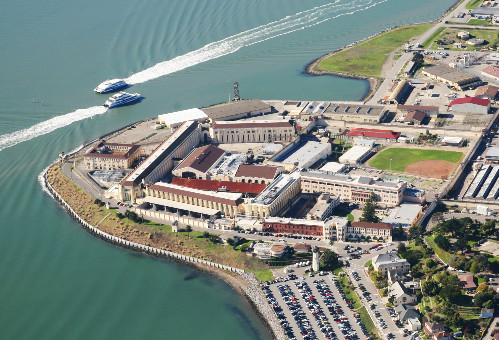
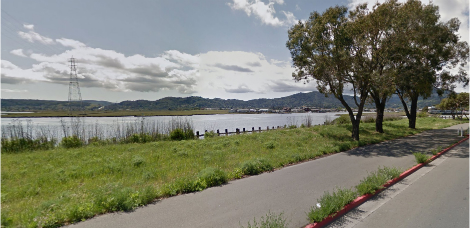

Bike
We will be starting this grand adventure with the bike route. Starting at the San Quentin State Prison, bikers will head north-west on Sir Frances Drake Blvd until it connects with highway 101. Proceed south following the directions of the cones and volunteers.
